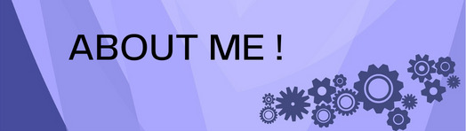

About Me...
I am Ananya Kannan, a CSE student specialising in IoT at SRM Institute of Science and Technology, Kattankulathur. I dream to become an IT professional in top facilities in the world. I have wide interests and have explored various domains like App development, Web development, Machine Learning, Competitive Coding, and so much more. Intending to create scalable IoT facilities for the people, I plan to make and channel IoT resources in the most cost-effective and reliable ways to make people's lives comfortable and enriching!